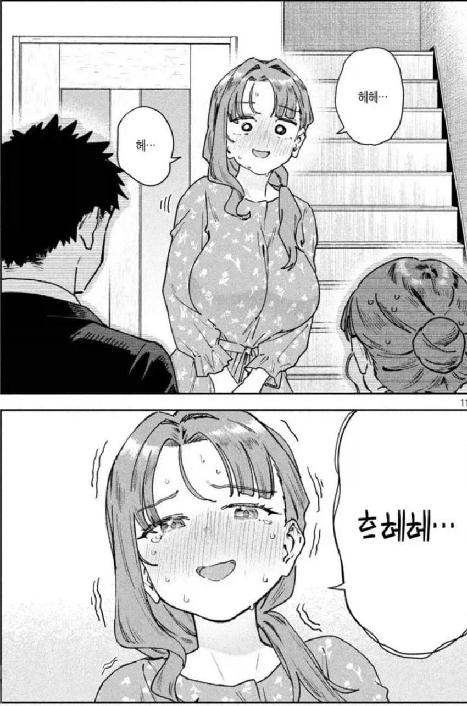
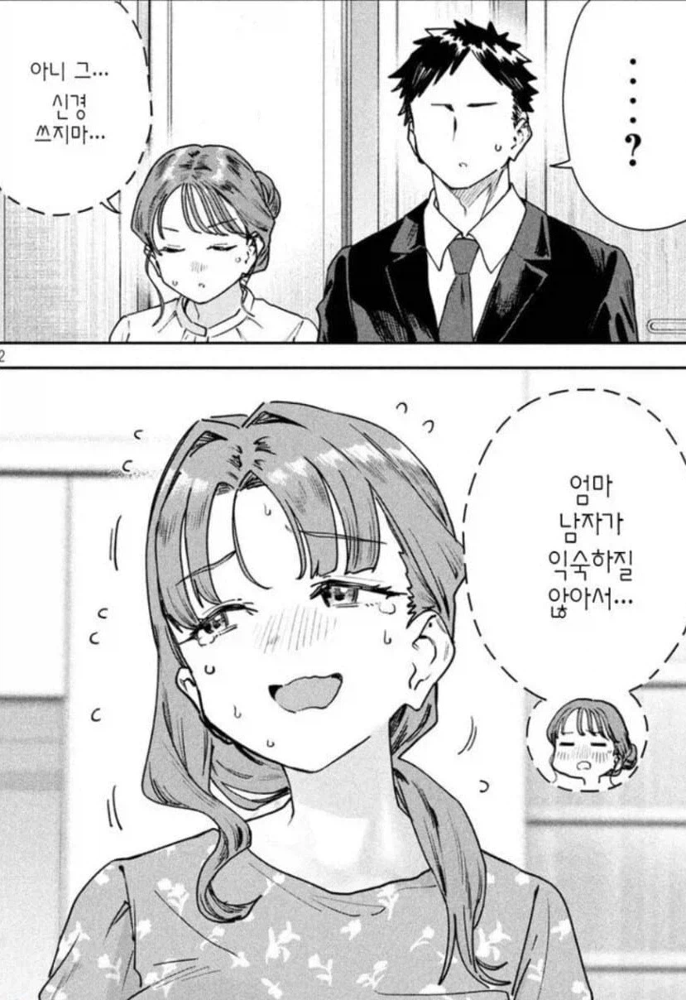

107 · 6 · 13 시간 전 · 원문


장모님(처녀)
수집 당시 댓글 11개
그게뭔데씹덕아 · 1 일 전
딸은 입양해온거임?
유한매트 · 1 일 전
퍄
개붕야호 · 1 일 전
처녀장모는 ㅅㅂ ㅋㅋ
Hitomi · 1 일 전
반드시 히토미여야만 하는 그림체
Montmartre · 1 일 전
뭔소리야 시발
↳ 답글 · 황두남 · 1 일 전
남자가 적어서 뭐 16세부터 의무정자기증하고
여자들은 그 씨받아다가 임신하는 설정인듯.
극소수남자 대다수여자세계관의 기본설정이지
↳ 답글 · Montmartre · 1 일 전
불타는케리건 · 1 일 전
Uzicha · 1 일 전
묘쌤이잖아 떡인지아님
변태아닙니다 · 1 일 전
엄마가 왤케 젊어ㅋㅋ
비정상헬린이 · 23 시간 전


딸은 입양해온거임?